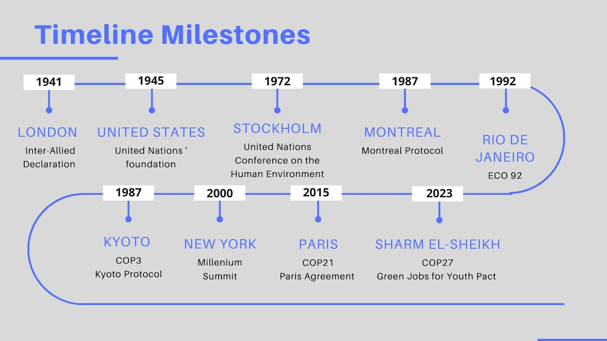

History
TechCon North America Training and Expo is an annual conference that has been providing a platform for industry experts to discuss technical development and solutions which improve key high voltage maintenance programs and asset management strategies for the aging electrical grid infrastructure consistently since 1996.
Attendees include a mix of utility & power generation experts, utility workforce members, corporate suppliers, and decision-makers, all eager to educate, train, network, and share their vast knowledge and experiences.


Mission
TechCon SoCal is an annual innovation and investment conference held in Southern California, bringing together one of the largest gatherings of industry leaders, investors, entrepreneurs, CXOS and technology enthusiasts.
Dedicated to fostering collaboration and knowledge-sharing, TechCon SoCal provides an invaluable platform for professionals to learn from industry experts, exchange ideas, and explore new opportunities.
Past Speakers

MARTI KONSTANT | AI STRATEGY @ NextCoLABS
Marti Konstant is a workplace futurist, inventor of the category career agility, and the best-selling author of “Activate Your Agile Career.”
She has an MBA from the University of Chicago Booth School of Business and is a former technology executive that has worked in Silicon Valley.
As a Top Career Influencer, inventor of the terms Career Agility and Aigility, and a Top 50 Future of Work Influencer, she has been featured in media outlets such as NBC Chicago, Forbes, and The Muse, and has worked in companies like Samsung, Dow Jones and Apple.
Marti is an expert in applying agile principles to individual and workforce development.

EITAN SHAY | CPO @ DarioHealth
Eitan serves as the Chief Product Officer at DarioHealth, bringing over 25 years of extensive experience in product development. Throughout his career, he has played pivotal roles across various industries and organizational scales, ranging from startups to hyper-growth companies and publicly traded corporations. In these roles, Eitan has led both product and engineering teams. Eitan is also a Boothie (Class of '11).